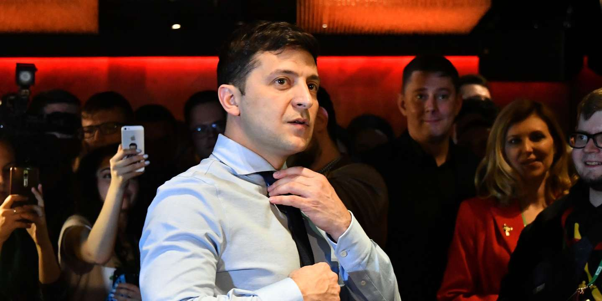

Driving through the streets of Uzhhorod, you can just about witness an example of how deeply Ukraine had plunged into an economic and political crisis. The Ukrainian city borders with three European countries Hungary, Slovakia and Poland, all within 50 kilometres of reach. However, unlike their neighbours, the city’s infrastructure is far from the European standards. Their roads are battered by weather and left unattended, streetlamps occasionally malfunction, and the building’s architecture emits a sense of a grey Communist era.
Among the New Year’s decorations, rise the billboards with the faces and slogans of the running candidates who are competing in the upcoming 2019 Presidential elections. One billboard bares no face or colours of the Ukrainian flag, with just one sentence on a plain solid background – “A President Is A Servant Of People”.
The upcoming elections in the Ukraine
The country is currently divided like never before. After the annexation of Crimea in March 2014 the country had plunged into disruption. From war in Donbas to protests on Maidan which led to the removal of then active president Viktor Yanukovych.
Five years later, the 2019 elections which will be held on the 31st of March offer a prospect of potential change in the Ukraine’s future. A total of 39 candidates had registered for the first round of elections, making it a record amount of candidates participating since the country had gained it’s independence in 1991.
Three well know names stand out from the list of candidates; current president Petro Poroshenko, the leader of political party “Fatherland” Yulia Tymoshenko and a showman Vladymyr Zelensky. Their names are being followed by Yuriy Boyko, a former Vice President of Ukraine, politician and a journalist Oleh Lyashko and current Head Of Security Services Ihor Smeshko.
Among politicians and government figures, Vladymyr Zelenski stands out like a white crow, but perhaps his candidacy is what’s needed for the people who are used to seeing the same old faces circulating in the government.
Who is Vladymyr Zelenski?
Many will know him from his famous TV series “Servant of the People”, a humble school teacher who one day became a President of Ukraine. The plot of the series uses satire to criticise the incompetent leadership of the country, starting with corruption, money laundering and distrust in politicians, something that Ukrainians are very familiar with.
Zelenski strategically uses TV platform to soon turn his four-season series into a political campaign, having already won public love and support. From the moment he hinted on becoming one of the candidates in the upcoming elections, there were rumors that he represents interest of a Ukrainian billionaire Ihor Kolomoyski, who also owns Ukrainian TV channel 1+1, on which Zelenski runs his comedy show and TV series. While it is clear that there are links between Kolomoyskyi and Zelensky, there is little at the moment to suggest that Zelensky would act as Kolomoyskyi’s puppet once in office.
 Vladymyr Zelenski, 31st December 2018, After Announcing His Candidacy.On the New Year’s night Zalenski had announced his candidacy at the end of his comedy concert. His speech aired at midnight instead of the traditional annual New Year address of Ukrainian President Petro Poroshenko, whose speech was shown on 1+1 later than on other Ukrainian channels and was shortened.
His unorthodox approach to starting a campaign deserves an admiration. The New Year’s PR stunt not only offers his supporters to see a new face running in the elections, but also publicly challenges Poroshenko’s authority.
Dissatisfaction in current government
Zelenskiy’s supporters are driven by a desire for new faces and fresh approaches and by their dismay at the systemic corruption that has long plagued Ukraine’s public sector.
The younger generation feels drawn to Zelenskiy and holds even stronger rejection towards Poroshenko and his government, which campaigns under the slogan “language, army and church”. This conservative view is just another example why Poroshenko’s campaign is so unpopular with the younger generation.
Sociology study shows that only 16% of Ukranians trust their current president and only 11% trust the government. Trust in parliament is even lower, at 8%. Moreover, antipathy towards the current president stands at over 50%. The state’s dysfunction is what’s providing the fertile ground for almost any outsider with almost any programme (or none at all) is unlikely to fare worse than representatives of the established political class.
Strategic populist approach
Perhaps, the support for Zelenski is not as irrational as it might seem at first. The anti-elite, showman had launched a populist campaign with a flare, from which even Donald Trump could learn a lesson or two.
When it comes to television, Zelensky’s credentials hold stronger line than those of the U.S. president. He is not just a celebrity, he is a professional, however this doesn’t necessary qualify him to be eligible in running a country during the period of war and economic crises.
Zelensky still keeps information about his campaign funding in the dark and his populist promises are still not backed up with strategic planning on how he is planning to achieve the goals.
In his recent video, which was distributed on social media, Zelensky explains that he won’t be following the traditional way of putting together a manifesto for his election. Instead, he turned towards a crowdsourcing tactic, reaching out through social media to the public and asking them to name five problems that they think should be addressed on a National scale.
The use of social media, streaming of live news from his party’s Instagram account and directly addressing the public in an informal way, is a move that brings him closer to the people gaining stronger foothold across the countries regions.
A road towards Democracy?
Apart from using social media as a communication tool, which became highly popular within political movements, Zelenski openly leans towards pro-European standards, eager to show the European Union that the country is ready to take steps in becoming more Democratic
Many candidates during these elections, including Petro Poroshenko and Yuliya Timoshenko, have openly spoken about building new ties with United States and working towards becoming eligible to join European Union as well as NATO.